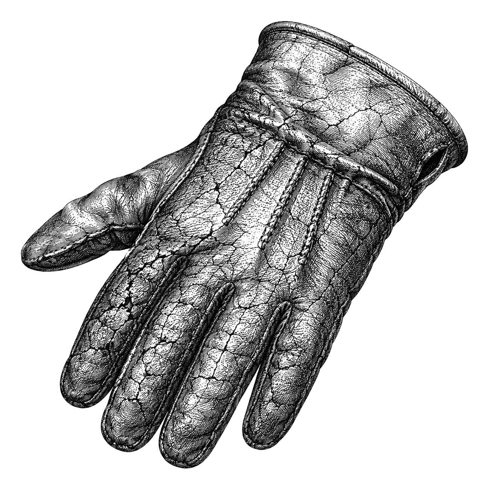

best-engine-ai-helper
A hardcoded model name
is right exactly once.

It picks the model,
so your code never has to.
Local or paid, for the machine you are on and the keys you actually hold.
library
CLI
HTTP API
MCP
agent skill
the problem
One name. Three machines.
It was true on the laptop where somebody typed it, and it outlives that laptop.
Apple M2 Max
96 GB unified
fits — 36 GB budget
A workstation GPU
discrete VRAM
fits, barely
A colleague's laptop
a fraction of the memory
does not fit — and nothing re-decides
the solution
Describe the job.
It names the model.
01 · COMMITTED
a brief
kind: both
min_tps: 15
task: "schema-constrained SQL"
→
02 · PER MACHINE
an engine file
backend: ollama
llm: {model: gemma3:12b,
ram_gb: 9.2}
→
03 · NO CONSTANT
your call site
llm.chat(prompt,
engine=ensure("."))
the part that is not obvious
It measures the speed —
instead of assuming it.
One sails past the floor. The other only just clears it — and that gap is the difference
between a recommendation that sounds comfortable and one that is.
the nicest part
Any OpenAI SDK. Unchanged.
client = OpenAI(base_url="http://127.0.0.1:8000/v1")
client.chat.completions.create(
model="best", messages=[…])
No model name to choose. No code to change.
try it
Free, local-first,
BSD-3-Clause.
🌐 deraison.ai/ai-helpers
★ star it on GitHub
github.com/warith-harchaoui/best-engine-ai-helper
Name the job.
Never the model.
best-engine-ai-helper